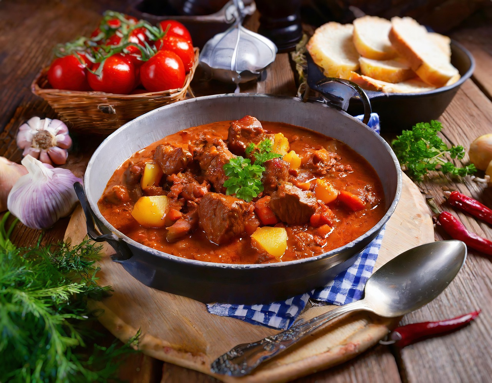

Gulaschsuppe
time
difficulty
date
| 125 g Rindergulsch |
| 75 g Zwiebeln |
| 300 ml Rinderfond |
| 38 g Karotten |
| 0.5 Stück Paprikaschote(n) |
| 0.25 Stück Knoblauchzehe |
| 12.5 g Butterschmalz |
| 1 Teelöffel Tomatenmark |
| 1 Teelöffel Paprikapulver edelsüß |
| Petersilie frisch und glatt |
| Spritzer Zitrone |
| Majoran, Kümmel ganz, Loorbeerblätter, Salz und Pfeffer nach Bedarf |
Zubereitung
time
time
| 1. |
Als erstes die Zwiebeln schälen halbieren und in feine Würfel schneiden. Die Knoblauchzehe fein schneiden und die Paprikaschoten waschen, entkernen und in beliebig große Würfel schneiden. |
| 2. |
Im Anschluss das Rindfleisch in 1,5 cm große Würfel schneiden. Tipp: |
| 3. |
Dann erhitzt du in einem großen Topf das Butterschmalz und brätst bei sehr hoher Temperatur das Fleisch in zwei Portionen an, so dass es schön Farbe annimmt. Die Fleischwürfel bitte zu Beginn in Ruhe lassen und nicht wenden, erst nach ca. 1 Minute. Zur Seite stellen. |
|
Tipp: |
|
| 4. |
Jetzt gibst du die gewürfelten Zwiebeln, Paprika, Knoblauch, Tomatenmark ohne weitere Fett-Zugabe in den Topf und röstest alles 3 Minuten bei mittlerer bis hoher Temperatur unter gelegentlichem Rühren an. |
| 5. |
Im Anschluss rührst Du erst das Paprikapulver kurz unter, löscht mit Rinderfond ab und löst mit einem Kochlöffel evtl. vorhandenen Bratensatz. |
| 6. |
Danach gibst Du das bereits angebratene Rindergulasch, samt ausgetretenem Fleischsaft, hinein Lorbeerblätter und gemahlenen schwarzen Pfeffer. Die Suppe kurz aufkochen lassen. |
| 7. |
Im Anschluss bei geringer Hitze mit Deckel für 35 Minuten (nach Belieben auch länger) auf der Herdplatte köcheln lassen. |
| 8. |
In der Zwischenzeit schälst Du die Kartoffeln und schneidest sie in ca. 1,5 cm Würfel. Die Karrotten schälen und in feine Scheiben schneiden. Bei dicken Karrotten halbierst Du diese und schneidest sie dann. |
| 9. |
Nach Ablauf der 35 Minuten gibst du die Kartoffeln, Karrotten, Majoran und Kümmel zur Gulaschsuppe und lässt sie weitere 25 Minuten ohne Deckel köcheln. Mit Salz, Pfeffer, 1 Spritzer Zitronensaft und nach Belieben Cayennepfeffer abschmecken. |
| 10. |
Zum Schluß Omas Gulaschsuppe ungarischer Art noch einmal nach Belieben abschmecken und mit frischer Petersilie servieren. Ich wünsche Dir einen guten Appetit. |
Rezept erstellt von
Susanne Di Sorbo